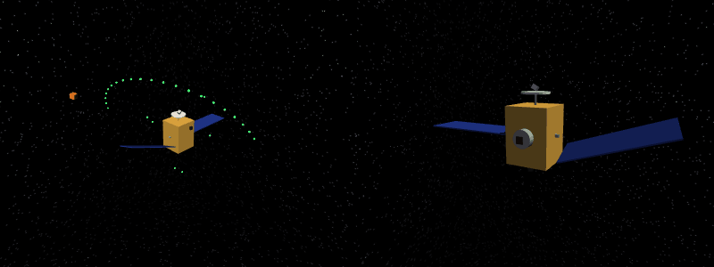
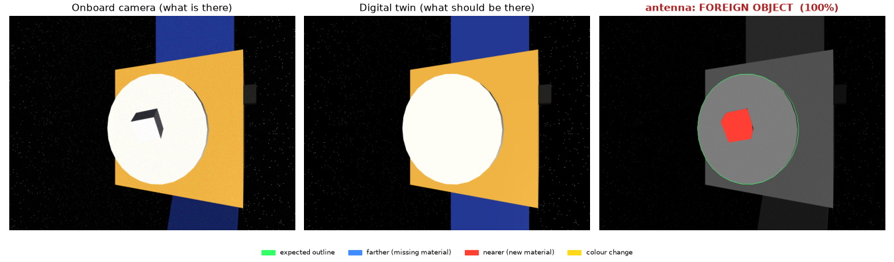
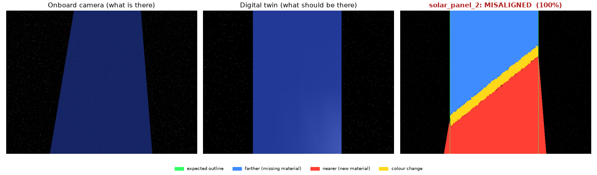
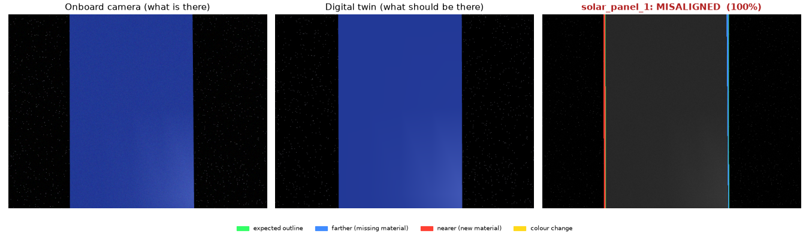
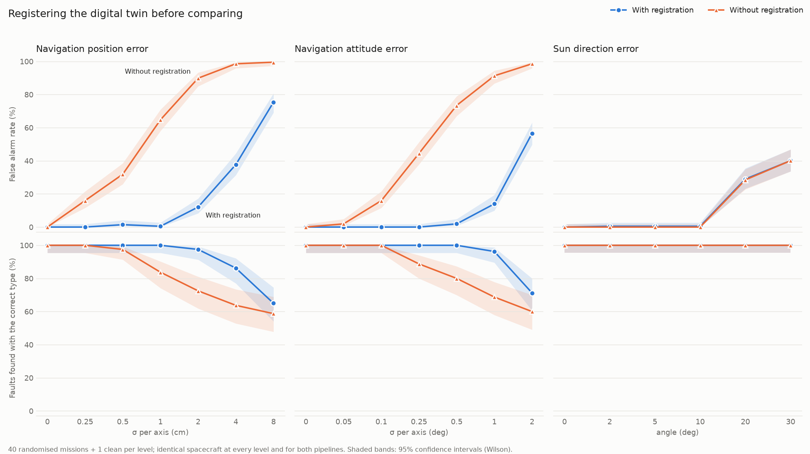
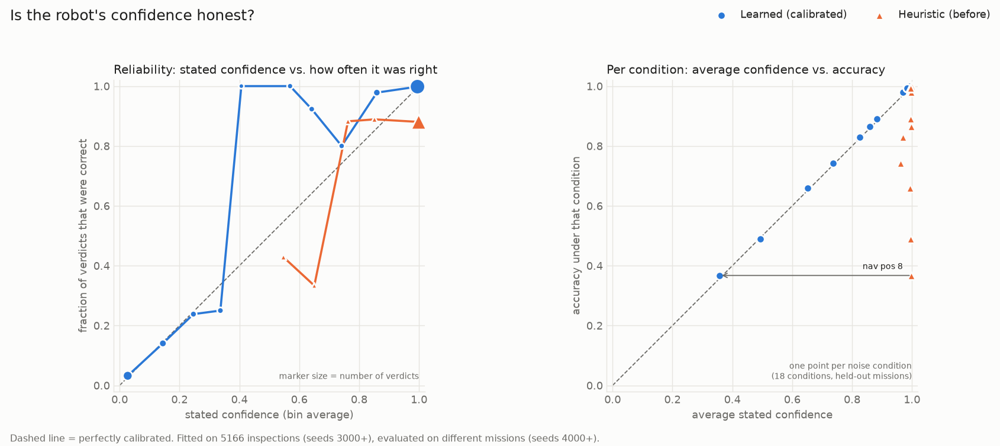
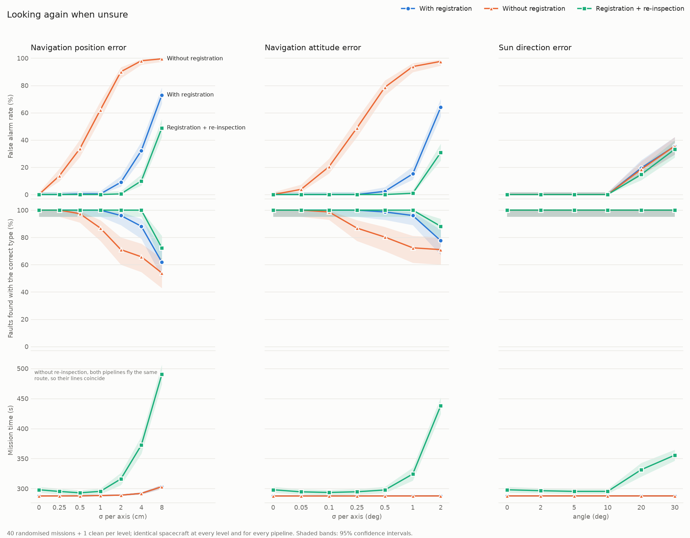
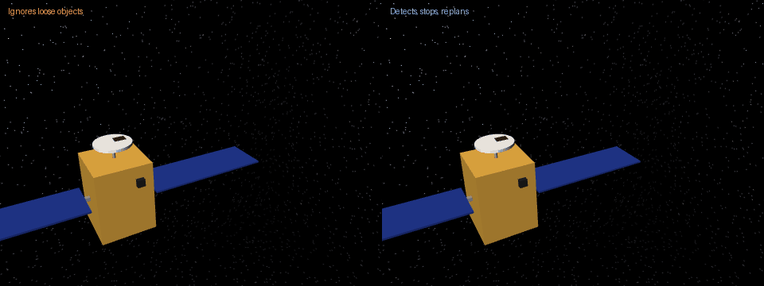
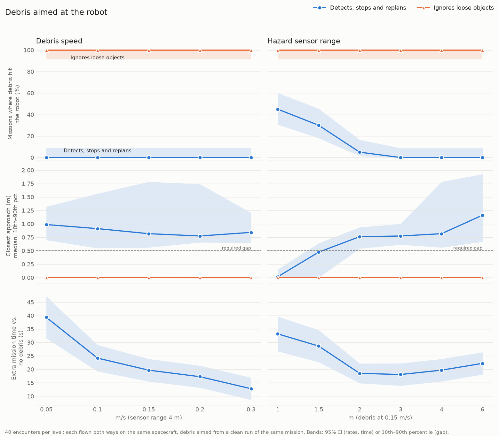

Does the robot's autonomy actually work? Test it before it flies.
I built a simulated free-flying robot that inspects a spacecraft, finds hidden damage, and deals with things going wrong. Then I built the harness that tries to break it, and measured what happened across more than 10,000 simulated missions.

Why build this
Space is heading toward robots that work on their own: inspecting satellites, servicing them, assembling things in orbit. Communication delays, limited bandwidth and the cost of human attention all push toward autonomy. Companies like Starfish Space, GITAI and Astroscale are building those robots.
A claim like "our robot can autonomously inspect a spacecraft" doesn't say much on its own. How many scenarios was it tested in? What happens when its sensors are off, when the spacecraft isn't what it expected, when something drifts into its path? Does it know when it's wrong?
This project is my attempt at the other half of the problem: not building the robot, but testing the intelligence of the robot. It's a simulation and evaluation testbed, with spacecraft inspection as the first mission, built so that every claim below comes with a number and the conditions it was measured under.
The testbed
Three parts that only meet through narrow interfaces, so the robot's software can't cheat by reading the simulator, and could later move to a different simulator or real hardware unchanged.
Simulator
A 10 kg cube-shaped free-flyer with 1 N cold-gas thrusters and a fixed propellant budget, around a spacecraft built from simple parts. Zero gravity, in the spacecraft's local frame.
It injects what goes wrong: hidden damage, navigation error, wrong lighting, drifting debris.
MuJoCo · RGB-D camera · hazard sensorAutonomy
Plans a collision-free route, flies it with a cascaded controller, compares each camera image with a "digital twin" of the healthy spacecraft, and keeps a belief about every component.
sees: pose estimate, images, sightings · returns: thrust commandsEvaluation harness
Runs hundreds of randomised missions in parallel, records ground truth the robot never sees, and scores it: faults found, false alarms, collisions, closest approach, time and propellant.
95% confidence intervals · held-out seedsEvery mission ends with a report like this one, generated by the code. This is the showcase spacecraft, which has one fault of each type:
Find the faults
First the basics: a 6-degree-of-freedom robot that flies itself to target poses, a spacecraft called Alpha-03, and a route that stays outside a keep-out sphere except along planned approach corridors. Then the inspection itself.
For each mission, the simulator hides one to three faults on Alpha-03: a missing part, a part rotated 20–30°, a piece of debris stuck on it, or a scorch mark. The robot is only told what the healthy spacecraft looks like. At each stop it takes a colour + depth image, renders what it should see from the same spot, and compares pixel by pixel. Material that's farther away than expected means something is missing; nearer means something new; same depth but a different colour means the surface changed. The mix says which kind of fault it is.


On 100 randomised spacecraft it had never seen, the robot found all 197 hidden faults with the right type, and raised 0 false alarms in 510 checks of healthy parts. The first version raised 19 false alarms; all of them were a tilted solar panel poking into a neighbour's camera view, fixed by only blaming change that's connected to the part being inspected.
A perfect score in simulation is a ceiling, not a claim. It assumed the robot knows exactly where it is. So the next step was to take that away.
Then break it on purpose
I added navigation error (a slowly drifting offset between where the robot thinks it is and where it really is) and lighting error (the real sun a few degrees from where the twin assumes it), then swept each one across 656 paired missions.
The detector fell apart at millimetres. A quarter of a centimetre of position error, or a tenth of a degree of attitude error, shifts the image by under a pixel, and every sharp edge turns into a thin strip of fake "change". At 1 cm, 65% of healthy parts were flagged. Lighting, by contrast, was harmless up to 10°.

Line the twin up first
The fix is to align the twin with the camera image before comparing them, in two stages. First in 3D: the depth image and the twin are the same surface seen from slightly different places, so point-to-plane ICP finds the small rigid motion between them, and that motion is the navigation error. Then in 2D: depth can't see sliding along a flat solar panel, but its outline can, so a Lucas–Kanade step aligns the images to a fraction of a pixel.
The risk is that alignment explains away a real fault. Guards: the worst-fitting points don't steer the fit, matching tightens from coarse to fine, and corrections larger than plausible navigation error are rejected. One real bug made it through anyway: a missing thruster dragged the fit 4 cm and got the healthy thruster next to it flagged. The mission tests caught it.

False alarms at 1 cm of position error fell from 65% to 0%, and at 0.5° of attitude error from 73% to 2%. Tolerance to navigation error went up roughly 5–10×. Lighting stayed the weak spot, which alignment can't fix.
Make the confidence honest
The detector's confidence was a heuristic that said ~100% whenever lots of pixels changed, including when those pixels were alignment artefacts. A robot that's always sure can't decide when to look again.
The simulator gives labelled data for free, so I trained a small logistic regression per verdict type to predict P(this verdict is correct) from things the robot can observe: how much changed, how well the alignment fit, and the shape of the change. Misalignment leaves thin strips along edges (65% of the change on edges, 2 px thick); real faults leave solid blobs (≤16% on edges, 27+ px thick).

| Held-out missions | Old heuristic | Learned |
|---|---|---|
| Avg. gap, confidence vs. accuracy | 0.119 | 0.009 |
| Ranks right above wrong (0.5 = chance) | 0.565 | 0.997 |
| Accuracy of verdicts at ≥ 90% | 88% | 99.8% |
Trained without any examples of one noise type and tested on it, the confidence stayed honest across the two navigation errors (they leave the same signature) but not for lighting it had never seen. A learned confidence is only as honest as the failures it was tested against, which is the case for an evaluation platform in one sentence.
Look again when unsure
With an honest confidence, the robot can act on it. Below 90%, it doesn't report yet: it flies to another viewpoint (tilted 30°, safe to reach, clear line of sight), looks again, and keeps its most confident verdict. The rest of the route is replanned around the detour.

False alarms stay near zero out to 2 cm or 1° of navigation error, about twice the range registration alone handles. Across every component it looked at more than once, a second look fixed 292 wrong verdicts and broke 5 right ones. It costs ~10 s on easy missions and up to 52% more time at 2°, and it doesn't help with lighting: the sun is just as wrong from every angle.
Get out of the way
A loose 0.25 m piece of debris drifts into the robot's path. The test harness is adversarial: it flies each mission once clean, records the route, and launches the debris to arrive exactly where the robot will be, crossing its path or aimed at it while it holds still to inspect. The robot only has a short-range hazard sensor.
Its loop: predict the object forward and itself along its plan; if they'd come within 0.5 m, stop and watch; weigh waiting against sidestepping; pick the cheapest option that keeps the gap; keep watching; resume.

The first sweep found the weak spot: with a sensor range under 2 m, 30–45% of encounters still ended in a hit, and 24 of those 30 hits happened while the robot was holding still. It spent its few seconds of warning watching, then couldn't get moving in time. It was also predicting its own motion at a constant speed, which overestimated how far it could get from a standstill by 2×. Two fixes: react immediately when a conflict is under 12 s away, and predict the robot by replaying its own controller (accurate to 3 cm).
| Sensor range | Before | Better prediction only | Both fixes |
|---|---|---|---|
| 1 m | 45% hit | 45% hit | 0% hit |
| 1.5 m | 30% hit | 15% hit | 0% hit |
| 2 m | 5% hit | 5% hit | 0% hit |

Ignoring the debris, the robot was hit in all 400 encounters. Avoiding it, 0 hits at every debris speed and every sensor range down to 1 m, and every mission still finished every inspection. At 1 m there's too little warning to keep the full 0.5 m gap; the robot dodges anyway with a median 0.24 m to spare.
What the testbed surfaced
The most useful results weren't the headline numbers. They were the failures the evaluation found that a single demo never would have.
Credit assignment. A fault on one part showing up in another part's camera view caused every false alarm in the first version.
Perfect scores hide fragility. 100% detection with perfect navigation turned into 65% false alarms at 1 cm of error.
Confidence has to be earned. A learned confidence was well calibrated on failure types it had seen and barely better than a guess on one it hadn't.
Fixes have limits you can measure. Looking again helps errors that change between looks and does nothing for errors that don't.
Caution can be the failure mode. The robot's 2-second pause to look before acting caused most of its collisions at short range.
The tooling has bugs too. Long batch runs found a renderer teardown bug that corrupted another renderer's output and a math-library crash on this macOS version. Both are fixed and covered by tests.
Details
How it's built
Python, MuJoCo for physics and rendering, NumPy and SciPy for everything else. About 3,100 lines of library code and 74 automated tests, developed on a laptop (Apple M3 Pro). The robot's software only exchanges a pose estimate, camera images, sensor sightings and thrust commands with the simulator, which is the seam a future ROS 2 or Isaac Sim port would use.
Every result above is reproducible from a script and a seed range, and every comparison runs the competing versions on identical spacecraft. Where possible, the data used to tune something wasn't used to report it: detection was tuned on one seed range and reported on another, the confidence model was fitted on one and tested on another, and re-inspection was evaluated on a third. The exception is the debris fix, which was designed after seeing failures on the same encounters it's reported on; a fresh-seed rerun is the obvious next check.
What's simplified
- The spacecraft is built from boxes and cylinders, and the faults are clean geometry. Real damage is subtler.
- Orbital dynamics are ignored: the target is the fixed reference frame, which is reasonable over minutes at a few metres.
- Navigation error is modelled as a drifting offset, not produced by a real estimator.
- Thrusters are ideal, and debris is a single sphere drifting at constant velocity. The hazard sensor has no occlusion or missed detections.
- Everything here is simulation. Nothing has been validated against real hardware or flight data.
What's next
- Lighting-robust comparison, and lighting faults in the confidence model's training data.
- Re-inspection that weighs the value of a second look against its fuel and time.
- Harder hazards: several tumbling objects, a sensor that misses things.
- Subtler faults, so that a "healthy" verdict can be wrong too.
- Learned perception, ROS 2, and a port to Isaac Sim on NVIDIA hardware.
About
I'm Priyansh Jain, coming from a business and technology background at NYU Stern. I'm interested in how physical AI will change space operations. Instead of waiting until I had a traditional aerospace background, I started building: simulation first, then perception, planning, failure recovery and evaluation. The project became an exploration of infrastructure for testing autonomous space robots before they fly.
I'm looking for internships in space robotics, autonomy, simulation and technical product roles. I'd be glad to walk through any part of this. The code, tests and every experiment script are on GitHub: github.com/priyanshjain05/space-autonomy.